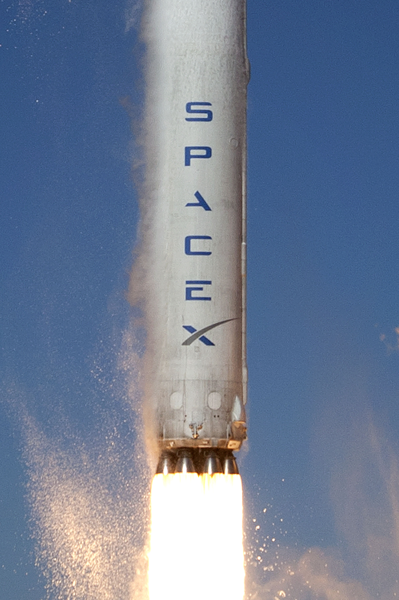
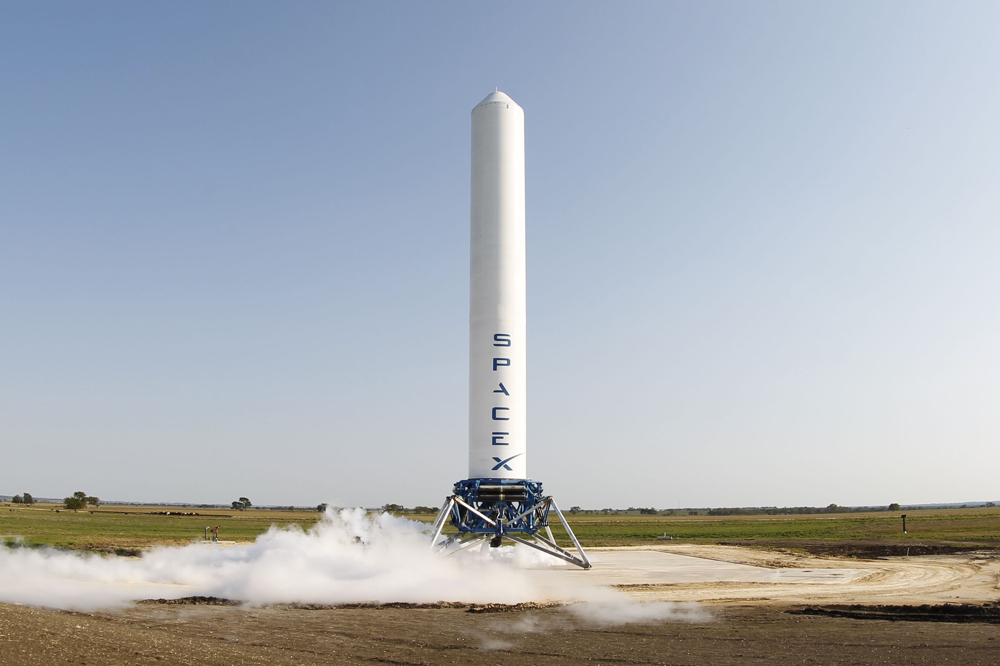
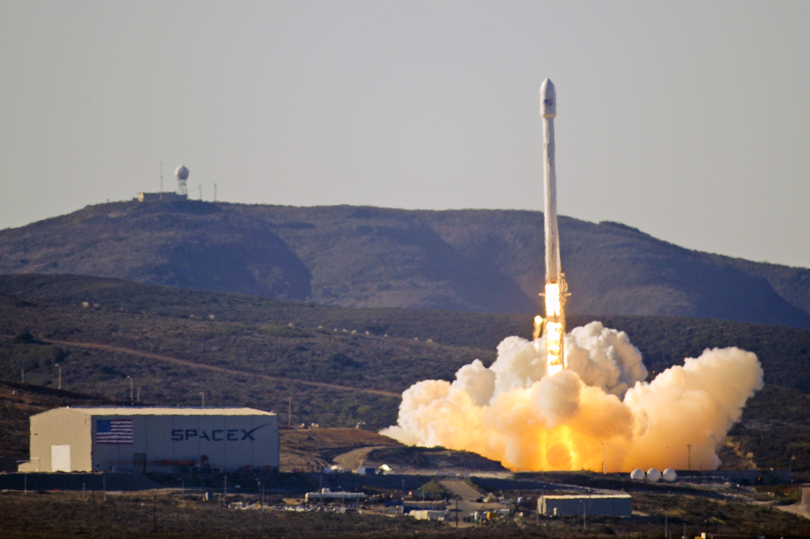
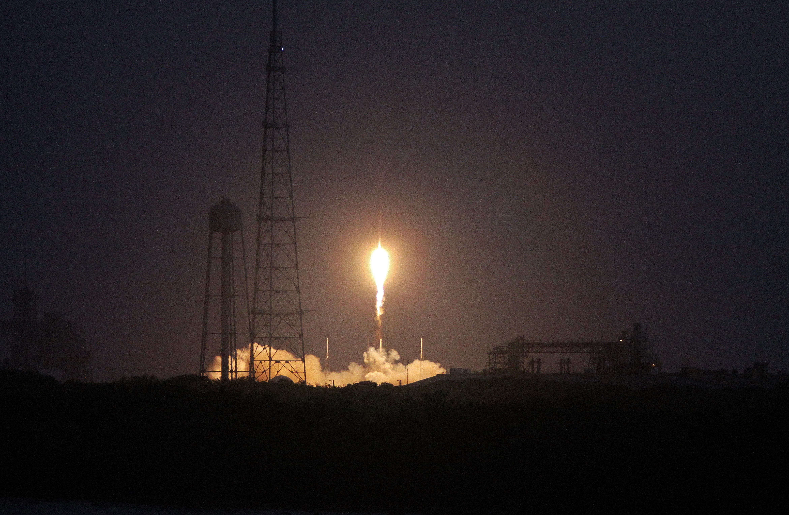

Storia SpaceX · Settima parte · 2013
Il nuovo Falcon 9, il mercato commerciale e i primi tentativi di ritorno
Nel 2013 SpaceX cambia scala: debutta Falcon 9 v1.1, sperimenta il ritorno propulsivo e raggiunge con SES-8 il mercato dei satelliti geostazionari. Tre percorsi collegati, ma con risultati e rischi differenti.
Indice Storia SpaceXDopo Dragon, un altro banco di prova
Il capitolo precedente si chiudeva con CRS-2 e con il passaggio di Dragon dalle dimostrazioni al rifornimento operativo della Stazione Spaziale Internazionale. Quella conquista non esauriva le ambizioni di SpaceX. Trasportare una capsula verso l’ISS e vendere lanci a operatori satellitari significava confrontarsi con esigenze diverse: destinazioni orbitali, protezione del carico, disponibilità delle basi e aspettative economiche del cliente. Il 2013 va letto attraverso questa apertura, senza ridurlo alla preparazione degli atterraggi che sarebbero arrivati negli anni successivi.
Due missioni rendono visibile il cambiamento. CASSIOPE inaugura la nuova versione del Falcon 9 dalla costa californiana; SES-8 porta il lanciatore verso un’orbita di trasferimento geostazionaria. Intanto, a McGregor, Grasshopper continua a sperimentare il volo verticale. Nel bilancio dell’anno questi programmi devono restare distinguibili. Un satellite consegnato, un dimostratore tornato sul proprio piazzale e un primo stadio che tenta il rientro dopo l’ascesa sono risultati diversi. Riunirli sotto una generica parola, successo, impedirebbe di capire quanto fosse stato acquisito e quanto rimanesse da dimostrare. [1][2][3]
Falcon 9 v1.1: non un semplice allungamento
Il nome conservava una continuità per riconoscere la famiglia, ma una variante va valutata nella configurazione volata. Cambiare propulsione e dimensioni modifica carichi, vibrazioni e comportamento durante l’ascesa. L’esperienza accumulata resta preziosa, senza eliminare la necessità di qualificare gli elementi nuovi. Il primo lancio della versione ampliata era perciò un passaggio tecnico autonomo, non una ripetizione dei precedenti.
Il Falcon 9 dei primi cinque voli lasciava spazio a una configurazione profondamente rivista. La versione v1.1 impiegava motori Merlin 1D, serbatoi più lunghi e una nuova disposizione della propulsione alla base del primo stadio. Otto motori circondavano quello centrale nell’insieme chiamato Octaweb, al posto della precedente griglia quadrata. Con la carenatura satellitare il veicolo raggiungeva circa 68,4 metri di altezza. Il numero dei motori rimaneva nove, ma questo elemento di continuità non deve nascondere la portata della revisione. [1]
Il cambiamento riguardava anche il modo di costruire il razzo. Prestazioni, montaggio, protezione dei motori e ripetibilità industriale dovevano evolvere insieme. Un lanciatore più capace non produce automaticamente un servizio più conveniente: occorre assemblarlo, collaudarlo e prepararlo senza trasferire tutta la maggiore complessità nei tempi di produzione. Questa relazione fra progetto e fabbrica è una chiave per interpretare l’Octaweb. Le promesse industriali presentate da SpaceX restavano comunque promesse del costruttore, da verificare nel tempo, non misure indipendenti della produttività già raggiunta.


Un razzo per clienti e destinazioni differenti
Per un operatore il trasporto comprende anche interfacce, ambiente meccanico e preparazione del satellite. Il carico deve arrivare al rilascio senza subire condizioni incompatibili con il proprio progetto. Una prestazione espressa soltanto in chilogrammi non racconta questo lavoro di integrazione. Vendere accesso allo spazio richiede quindi una catena operativa completa, che inizia molto prima dell’accensione dei motori e termina con la separazione corretta.
La carenatura costituisce un’altra differenza decisiva. Nei voli precedenti Dragon occupava la sommità del Falcon 9; un satellite richiedeva invece un involucro capace di proteggerlo durante l’attraversamento dell’atmosfera e di separarsi quando non era più necessario. Con CASSIOPE debuttava sul Falcon 9 anche questo sistema. Non era un accessorio estetico: la disponibilità di una carenatura ampliava concretamente la gamma dei carichi trasportabili. [1]
L’apertura commerciale non coincideva con un allontanamento dal lavoro istituzionale. Nel giugno 2013 Air Force e SpaceX avevano sottoscritto un accordo e un piano per la certificazione del Falcon 9 v1.1; CASSIOPE sarebbe diventato il primo dei tre voli richiesti in quel percorso. Una missione poteva dunque produrre contemporaneamente un servizio al cliente, dati sulla nuova configurazione e prove utili a un diverso mercato futuro. Questo non significa che la certificazione fosse già ottenuta: il primo volo soddisfaceva una tappa, non l’intero processo. [4]
Grasshopper: imparare a tornare sul piazzale
Un dimostratore non deve riprodurre ogni caratteristica del sistema finale per essere utile. Deve rendere osservabile una difficoltà e consentire di confrontare il comportamento misurato con quello previsto. Prove circoscritte aiutano a riconoscere gli errori senza coinvolgere una missione orbitale. Il limite nasce quando quel risultato viene esteso oltre le condizioni sperimentate: la dimostrazione di una funzione non certifica tutte le altre.
A McGregor, in Texas, il problema del ritorno veniva affrontato su scala sperimentale. Grasshopper era un dimostratore di decollo e atterraggio verticale: impiegava un serbatoio di primo stadio Falcon 9, un Merlin 1D e quattro gambe fisse. Il 7 ottobre 2013 raggiunse 744 metri e tornò al punto di partenza. Il filmato ufficiale ripreso da un esacottero rendeva leggibili la salita, la stabilizzazione e la discesa, mostrando il controllo del veicolo durante tutta la prova. [3]
Il valore dell’esperimento non era l’altitudine in sé. Atterrare verticalmente significa governare posizione, velocità e orientamento mentre il propellente viene consumato e la massa diminuisce. Il motore deve contribuire a frenare senza trasformare l’ultima parte della discesa in una nuova salita. Sensori, guida e propulsione devono quindi lavorare come un sistema. Grasshopper permetteva di isolare questi problemi in un ambiente relativamente circoscritto, ripetendo prove vicino alle strutture di terra. Non dimostrava però il rientro da una traiettoria di lancio orbitale: mancavano le velocità e le condizioni atmosferiche attraversate da un booster dopo la separazione.


CASSIOPE: il debutto dalla California
Il 29 settembre 2013 Falcon 9 v1.1 decollò da Space Launch Complex 4 East, a Vandenberg. Era il primo lancio SpaceX da quella base e il debutto in volo della configurazione ampliata. CASSIOPE, missione canadese, combinava l’indagine dell’ambiente spaziale con una dimostrazione tecnologica per le comunicazioni. Il complesso scientifico ePOP studiava la ionosfera e le interazioni legate alla meteorologia spaziale; Cascade sperimentava il trasferimento di dati. Il carico non era quindi una semplice massa di prova collocata sopra il nuovo razzo. [5][6]
Il satellite raggiunse l’orbita e la missione di lancio riuscì. La costa occidentale aggiungeva alla rete operativa di SpaceX un sito distinto da Cape Canaveral, particolarmente utile per traiettorie dirette verso alte inclinazioni. Nella storia dell’azienda il passaggio va considerato anche sotto questo aspetto: non soltanto un razzo nuovo, ma procedure e infrastrutture da far funzionare insieme in una nuova base. La capacità di offrire un servizio dipendeva dalla combinazione di questi elementi, non dalle sole prestazioni nominali del veicolo. [4]

.jpg){kind=link}
Il carico in orbita, il booster ancora perduto
Il primo stadio, anche quando sale oltre l’atmosfera più densa, non compie per questo un’orbita completa. È lo stadio superiore a proseguire il lavoro necessario all’inserimento del carico. Parlare di recupero dopo un lancio orbitale descrive dunque il tipo di missione del razzo, non afferma che il booster abbia orbitato attorno alla Terra. La precisione del linguaggio aiuta a distinguere compiti e traiettorie.
Dopo la separazione, il primo stadio di CASSIOPE venne impiegato per un esperimento di rientro propulsivo. La ricostruzione tecnica NASA identifica quel volo come la prima dimostrazione Falcon 9 di retropropulsione supersonica: i motori venivano riaccesi per decelerare il veicolo mentre rientrava nell’atmosfera. La manovra trasferiva il programma di ritorno fuori dal perimetro delle prove a bassa quota. Il booster non fu tuttavia recuperato integro. Occorre quindi mantenere separati il successo della consegna orbitale e l’esito incompleto dell’esperimento sullo stadio. [7]
La differenza rispetto a Grasshopper era sostanziale. Dopo un lancio il primo stadio possiede una traiettoria e una velocità determinate dal lavoro svolto per il carico; il rientro deve partire da quelle condizioni. Inoltre, accendere motori contro il flusso atmosferico introduce un’interazione fra getti, aria e struttura che un breve salto verticale non riproduce. Imparare a decelerare rappresentava un progresso, ma non equivaleva ad avere un sistema riutilizzabile. Per riutilizzare occorre conservare il veicolo, valutarne lo stato e riportarlo nelle condizioni di volare. Nel 2013 questa catena non era stata completata.
Il ritorno come problema economico
Il prezzo del servizio e il costo sostenuto dal fornitore sono inoltre grandezze differenti. Il primo dipende anche dalle condizioni contrattuali e dalla concorrenza; il secondo comprende materiali, lavoro, infrastrutture e organizzazione. Un’offerta aggressiva può precedere una tecnologia di recupero matura. Non è quindi corretto attribuire retroattivamente ogni vantaggio commerciale del Falcon 9 alla riutilizzabilità: nel periodo descritto il servizio veniva ancora svolto senza rilanciare gli stadi.
L’interesse per il recupero nasceva da una questione industriale comprensibile: gran parte dell’hardware di un lanciatore veniva perduta dopo un solo impiego. Recuperarlo poteva cambiare la distribuzione dei costi, ma la convenienza non discendeva automaticamente dall’atterraggio. Andavano considerati il propellente riservato al ritorno, le prestazioni disponibili per il satellite, le operazioni di recupero e le verifiche necessarie prima di un nuovo volo. A questi elementi si aggiungeva la frequenza con cui uno stesso stadio avrebbe potuto essere realmente utilizzato.
È importante fermare il racconto al livello delle prove allora disponibili. Grasshopper documentava un controllo verticale ripetibile; CASSIOPE aveva portato l’esperimento dentro un profilo di lancio. Nessuno dei due forniva ancora un consuntivo pubblico dei costi di un booster recuperato e rilanciato. La prospettiva economica dava una direzione al lavoro tecnico, non ne certificava in anticipo l’esito. In questo senso il 2013 è un anno di passaggio: il ritorno smette di essere soltanto una proposta, mentre la sua trasformazione in servizio rimane un problema aperto.
SES-8: conquistare il trasferimento geostazionario
Il 3 dicembre 2013 Falcon 9 lanciò SES-8 da Cape Canaveral. Per SpaceX era la prima missione completata verso un’orbita di trasferimento geostazionaria e il primo lancio commerciale di questo tipo. Il satellite, costruito da Orbital Sciences per SES, era destinato ai servizi di comunicazione nell’Asia meridionale e nella regione del Pacifico asiatico. La massa al lancio era di circa 3.138 chilogrammi. L’orbita di rilascio prevista aveva un perigeo di 295 chilometri e un apogeo di circa 80.000: una traiettoria di trasferimento supersincrona, non l’orbita operativa finale. [2][8]
Questa distinzione evita un equivoco frequente. Un lanciatore può consegnare un satellite nell’orbita concordata senza collocarlo direttamente sulla posizione geostazionaria da cui fornirà il servizio. Il trasferimento lascia al veicolo spaziale successive manovre di sistemazione orbitale. Per il Falcon 9 il profilo richiedeva inoltre una seconda accensione dello stadio superiore dopo una fase di volo libero. Il completamento della sequenza dimostrava una capacità necessaria per quel mercato, diversa dall’inserimento in orbita bassa richiesto nelle missioni Dragon. [2]

.jpg){kind=link}
La scelta di un operatore commerciale
La fiducia commerciale si costruisce attraverso decisioni, non soltanto con dichiarazioni. Affidare un satellite a un fornitore significa legare una parte del proprio programma alla sua capacità di mantenere gli impegni. Quando il volo riesce, il risultato acquista un significato che supera il veicolo: un altro operatore può valutare un precedente operativo invece di una promessa progettuale.
SES non acquistava una dimostrazione astratta. Un satellite di telecomunicazioni doveva entrare in una flotta, servire clienti e produrre ricavi. Scegliere un nuovo fornitore di lancio significava accettare un rischio tecnico e di calendario in cambio di una diversa opportunità industriale. Nel rapporto annuale SES presentò SES-8 come un esempio della propria volontà di sostenere alternative nell’accesso allo spazio. Questa lettura del cliente è significativa: la missione non apparteneva soltanto alla strategia di SpaceX, ma anche alla ricerca di maggiore scelta da parte di chi comprava il trasporto. [9]
Già nei risultati dell’esercizio precedente SES indicava il rapporto con SpaceX come parte della diversificazione dei fornitori. Il successo di dicembre dava concretezza a quella scelta. Non stabiliva ancora una superiorità generale del Falcon 9, né cancellava il valore dei lanciatori concorrenti; ampliava però l’insieme delle opzioni credibili per una determinata categoria di missioni. Il prezzo proposto poteva attirare attenzione, ma era il volo completato a rendere quella proposta verificabile sul piano operativo. [10]
Alla fine del 2013: due conquiste, una promessa aperta
Il bilancio non si lascia comprimere nella sola storia del recupero. Falcon 9 v1.1 aveva inaugurato una nuova configurazione, una nuova base operativa e un accesso al mercato del trasferimento geostazionario. CASSIOPE e SES-8 mostravano che il lanciatore poteva lavorare fuori dal percorso Dragon–ISS. Parallelamente, Grasshopper e l’esperimento sul primo stadio avevano prodotto prove differenti per il programma di ritorno. Il loro significato emerge proprio quando non si confondono la missione acquistata dal cliente e l’attività sperimentale svolta sullo stesso razzo.
Alla chiusura dell’anno SpaceX disponeva dunque di nuove capacità dimostrate, ma non di un Falcon 9 già riutilizzato. Gli sviluppi del 2014 e gli atterraggi del 2015 appartengono al capitolo successivo. Qui il punto di arrivo è più preciso: la crescita commerciale e la ricerca sul ritorno procedevano insieme, senza essere la stessa cosa. La prima chiedeva di consegnare satelliti secondo impegni contrattuali; la seconda chiedeva di conservare una parte del mezzo di trasporto. Comprendere questa doppia esigenza permette di leggere il 2013 come un passaggio decisivo, non come un esito già scritto.
Fonti pubbliche e tracce
Le fonti sostengono date, configurazioni e risultati indicati nel testo. Le considerazioni sul rapporto fra progetto, servizio e riuso sono analisi redazionali. I press kit descrivono anche programmi prevolo: per gli esiti sono usati documenti successivi e resoconti del cliente. Ultima verifica editoriale: 10 ottobre 2026.
- [1] SpaceX, Upgraded Falcon 9 Demonstration Mission Press Kit, settembre 2013. Documento del costruttore conservato da Spaceflight Now: Merlin 1D, Octaweb, dimensioni, carenatura e Vandenberg.
- [2] SpaceX/SES, SES-8 Mission Press Kit, novembre 2013. p. 3 (pagina 4 del PDF), sezione «Mission Overview»: satellite, massa, mercato servito e profilo di trasferimento. La data programmata nel documento non è quella del lancio effettivo.
- [3] SpaceX, Grasshopper 744m Test | Single Camera (Hexacopter). Video ufficiale pubblicato il 12 ottobre 2013, relativo alla prova del 7 ottobre; descrizione tecnica del dimostratore.
- [4] Aeronautics and Space Activities, Fiscal Year 2013, rapporto interagenzia pubblicato da NASA. Sezione Department of Defense: accordo e piano di certificazione del 7 giugno, ruolo del volo CASSIOPE.
- [5] Canadian Space Agency, Milestones in Canadian space history. Lancio di CASSIOPE del 29 settembre 2013.
- [6] Canadian Space Agency, CASSIOPE. Obiettivi del satellite e componenti ePOP e Cascade.
- [7] NASA, Advancing Supersonic Retropropulsion Using Mars-Relevant Flight Data: An Overview, 2017. Ricostruzione tecnica retrospettiva: prima prova Falcon 9 del 29 settembre 2013. Il confronto fisico con la retropropulsione non implica identità fra una missione terrestre e un atterraggio su Marte.
- [8] SES, Annual Report 2013, p. 6, «Introduction by the President and CEO»: flotta e lancio di SES-8. Fonte del cliente per data ed esito del lancio del 3 dicembre. I parametri del profilo di trasferimento provengono dal press kit [2], che descrive il programma prevolo. Sostituisce il comunicato riprodotto da SpaceRef, non più disponibile.
- [9] SES, Annual Report 2013, introduzione del presidente e amministratore delegato. Data del lancio e significato dell’accesso alternativo allo spazio per l’operatore.
- [10] SES, Full Year 2012 Results. Rapporti con SpaceX e diversificazione dei fornitori prima del volo SES-8.
Fotografie e riutilizzo
Quattro fotografie storiche, non generate: due SpaceX con dedica CC0, una U.S. Air Force in pubblico dominio negli Stati Uniti e una James McCloskey con licenza CC BY-SA 2.0. Autori, schede originali e licenze sono indicati nelle singole didascalie. Le fotografie sono conservate senza ritocchi; impaginazione e dimensioni visualizzate dipendono dal sito. Non si presume che ogni immagine pubblicata da SpaceX sia automaticamente libera: le condizioni sono state verificate per ciascun file.
Consultare l’atlante tecnico
Caratteristiche, schemi, configurazioni e limiti: Merlin.